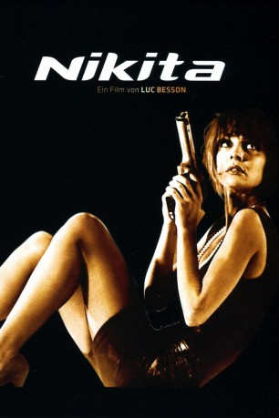

#3400 Nikita
Alternativ: La Femme Nikita (Originaltitel)
 
 IMDB-Wertung: 7.4 / 10
IMDB-Wertung: 7.4 / 10  Metascore: 56
Metascore: 56 
Die Tat war brutal und brutal schlägt der Staat zurück: Nach einem Blutbad in einer Apotheke erhält die drogenabhängige Nikita lebenslänglich. Im Gefängnis wird sie überfallartig zu Tode gespritzt - scheinbar. Denn als Nikita erwacht, stellt sie der mysteriöse Bob vor die Wahl: Entweder läßt sie sich zur Killerin im Dienst der Regierung ausbilden, oder die nächste Spritze ist tödlich. Nikita entscheidet sich für das Leben. Unter neuer Identität mordet sie fortan präzise wie ein Roboter ihr unbekannte Menschen. Aber sie hat sich noch einen Rest von Gefühl und Wärme bewahrt...
Jahr: 1990
Dauer: 117 Minuten
FSK: 16
Land: Frankreich Studio: Jugendfilm-VerleihTonspuren: DTS - ,
Untertitel: Deutsch,
Auflösung: 1080p (1920x816) Größe: 11264 MB
Genre: Action, Thriller
Regisseur:  Luc Besson
Luc Besson
Drehbuch: Luc Besson
Soundtrack: Éric Serra
Darsteller:
- Anne Parillaud als Nikita
 Tchéky Karyo als Bob
Tchéky Karyo als Bob Jeanne Moreau als Amande
Jeanne Moreau als Amande Jean-Hugues Anglade als Marco
Jean-Hugues Anglade als Marco Jean Reno als Victor nettoyeur
Jean Reno als Victor nettoyeur Robert Axelrod als Computer Teacher , uncredited
Robert Axelrod als Computer Teacher , uncredited- Xavier Bonastre als Homme restaurant , uncredited
 Michael Forest als Judge / Waiter , uncredited
Michael Forest als Judge / Waiter , uncredited- Melora Harte als Nikita , uncredited
 Michael McConnohie als Jail Cop 2 , uncredited
Michael McConnohie als Jail Cop 2 , uncredited- Ellyn Stern als Amande , uncredited
- Marc Duret als Rico
- Patrick Fontana als Coyotte
- Alain Lathière als Zap
- Laura Chéron als La punk
 Jacques Boudet als Le pharmacien
Jacques Boudet als Le pharmacien- Helene Aligier als La pharmacienne
- Pierre-Alain de Garrigues als Flic pharmacie
- Patrick Pérez als Flic pharmacie
- Bruno Randon als Flic pharmacie
- Vincent Skimenti als Flic pharmacie
- Roland Blanche als Flic interrogatoire
- Joseph Teruel als Stagiaire flic
- Jacques Disses als Avocat
- Stéphane Fey als Président tribunal
- Philippe Dehesdin als 1er magistrat
- Michel Brunot als 2ème magistrat
- Rodolph Freytt als 1er infirmier
- Pavel Slabý als 2ème infirmier
- Jean-Luc Caron als Professeur d'informatique
- Rénos Mandis als Professeur de tir
- Jean-Marc Merchet als Professeur de judo
 Philippe Leroy als Grossman
Philippe Leroy als Grossman- Patrick Serrière als Chauffeur Bob
- Iska Khan als Homme restaurant
- Heike Fisher als Femme restaurant
- Patrick Buiquangda als 1er garde du corps
- Eddie Gaydu als 2ème garde du corps
- Jose Steinmann als 3ème garde du corps
- Philippe Hernando als 4ème garde du corps
- Gérard Touratier als Gardien porte blindée
- Jean Bedin als Armurier
- Edith Perret als Dame agence
- Jean-Pierre Pauty als Homme bar hôtel
- Michel Campa als Homme écoute
- Murray Gronwall als Responsable hôtel
- Pierrick Charpentier als Flic hôtel
- Rafael Sultan als Flic hôtel
- Hubert Gillet als Flic hôtel
- Fausto Costantino als Garde du corps
Datei: X:\1990\Nikita (1990, FSK16, 1920x816).mkv seit 01.04.2016
Festplatte: HD 1987-1991
 Es gibt insgesamt 52 Filme in der Gruppe '1990'
Es gibt insgesamt 52 Filme in der Gruppe '1990'